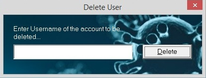

This option is used to delete an already existing user, whatsoever the reason may be. If you are the first user of this application after istallation, then you get an error saying No Users Found! Go to 'Register New User' in 'Admin' menu to Register First User as shown in the picture below. So if you are the first user, register yourself first as specified in the error message.
To delete an existing User from the database, approval by an existing user's login credentials is required. You can enter the credentials of any other user for approval or may also enter the same user's credentials whose account has to be deleted (As till deletion the user is still an approved admin). Once the login is successfull, a window as shown in below image pops up.

If a proper or existing User name is not entered before clicking on Delete button, an error message pops up saying Username Not Found! Else, if the entered username exists in the database, then the credentials of the user are deleted and a message pops up saying User Deleted Successfully!